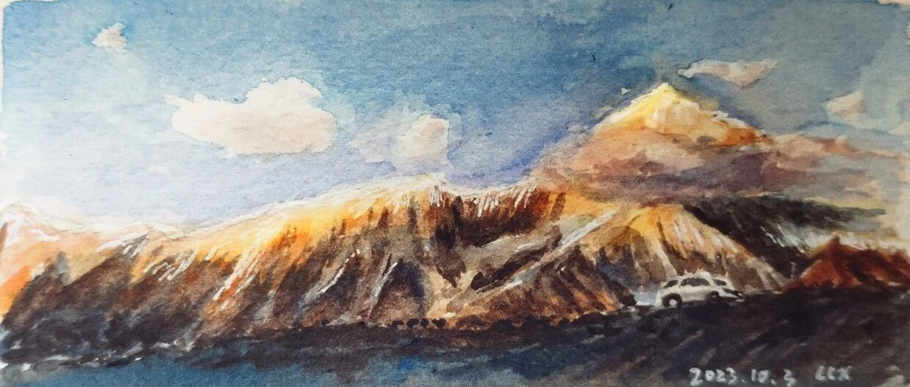

川西之旅Ⅰ——坐等日照金山。
早晨好~好久不见~
小编前一段时间趁着长假去了趟川西~
这次旅行，有非常奢侈地用了一整个下午的时间，面对贡嘎雪山席地而坐，无所事事只等它从云彩中探出头来。
对我来讲，这个下午是整个旅程中最宝贵的时光，让我有充足的时间好好看看这座蜀山之王，画下它的样子，记下它所有的细节，将它的美完整地放入一片时光切片永远收藏。
在海拔4500写生：


我们妄想风会掀开遮住山尖的云雾，让我们一睹面纱下的雪山真颜。
但那挡住山尖，一会向左飘一会向右飘的云，是神山的呼吸吗？我们坚持了几个小时，结果对它而言，就只不过是几次不值一提的呼吸而已。
我们向它投降，不再妄想看到面纱之后的壮丽景色，也接受了自己的渺小和平凡。
能在几千几万年之中，与它对视这短短一瞬，已是荣幸之至。只轻轻地凝视远方的她，就仿佛能获得内心永远平和的恩赐。

傍晚时分无奈抱憾离去的我们，在逐渐起步的车窗之外，终于看到了神山对我们露出了金色的山顶。那一刻的日照金山也成为这趟旅程中最值得回味的一个传奇故事。

最后也把这份平和与幸运分享给大家～即使平凡渺小，也有无穷无尽的勇气与幸运！